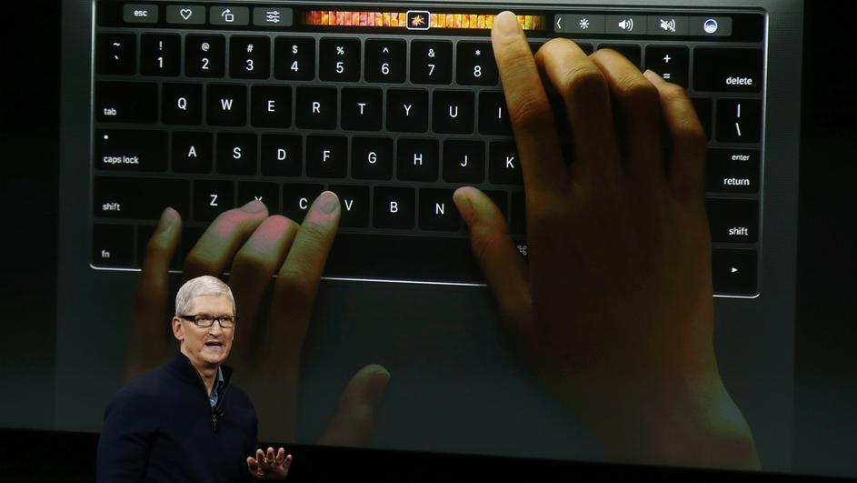

Novosti
Internetska džungla
Svaki put kad se spojite na internet dobro razmislite što klikate, kakve stranice posjećujete, koje podatke o sebi objavljujete i kakve mailove otvarate. Više ...
Ne otvarajte sumnjive poruke i isključite web kameru
Korisnicima se savjetuje da ne otvaraju sumnjive privitke u porukama od nepoznatih pošiljatelja jer takvi privitci mogu sadržavati maliciozne programe te da budu na oprezu prilikom slanja povjerljivih poruka.Više ...

Sa 16 godina hakirao je Apple, umjesto zatvora dobio fakultet
U razdoblju od dvije godine, tinejdžer je nekoliko puta hakirao glavni sustav tehnološkog diva i skinuo ukupno oko terabajt osjetljivih podataka. Spremio ih je u datoteku koju je nazvao Hacky hack hack Više...